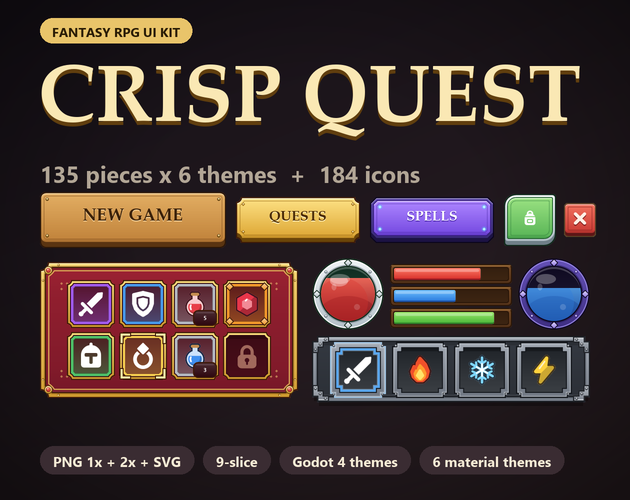

Crisp Quest: fantasy RPG UI kit with 6 themes and 184 icons
Crisp Quest is a fantasy RPG UI kit: 135 pieces in each of 6 material themes (Carved Wood, Parchment & Ink, Stone & Iron, Royal Gold, Elven Silver, Arcane), 147 fantasy icons in white and dark and 37 colour icons. Everything comes as PNG (1x and 2x) and SVG with 9-slice borders listed, plus ready-made Godot 4 themes.

- Contents
- 1141 images: 135 pieces x 6 themes, 147 icons in white and dark, 37 colour icons
- Formats
- PNG 1x + 2x, SVG, sheets.json, Godot 4 themes
- Price
- $6.99 on itch.io (anipixels.itch.io/crisp-quest)
- Free sampler
- 52 pieces, free on itch.io (anipixels.itch.io/crisp-quest-free)
- Licence
- Royalty-free for commercial and non-commercial projects, no credit required, no reselling or redistribution of the files
- Made by
- Anipixels, with procedural code written with an AI assistant (Claude)
What is included
- 810 themed pieces: 135 per theme in 6 themes, with the same file names and sizes in every theme so you can swap a whole look.
- The themes are different drawings, not recolours: each has its own corner shape and corner ornaments (brass brackets on carved wood, ink flourishes on parchment, riveted iron on stone, rubies on a gold frame, silver leaves, glowing arcane diamonds).
- Per theme: buttons (33), panels (8), dialogue (5), inventory (18), hotbar (9), bars (13), quest (5), tabs (4), toggles (7), sliders (5), scrollbar (3), inputs (6), banners (4), dividers (3), hud (11), texture (1).
- Buttons in large, medium, small and square sizes plus a secondary style and a round button, each with normal, hover, pressed and disabled states; close, arrow, plus and minus buttons.
- Panels and windows: panel, inset panel, ornate panel, window with a title bar, title plate, two hollow frames, tooltip.
- Dialogue: dialogue box, name plate, continue arrow, choice rows (normal and selected).
- Inventory: 48 px slots: empty, hover, selected, locked, five rarity borders (common, uncommon, rare, epic, legendary), eight equipment slots with ghost icons (head, chest, hands, feet, weapon, off-hand, ring, amulet) and a stack-count badge.
- Hotbar and skills: hotbar slot (normal and active), tray, round skill slot and ring, three cooldown overlays, hotkey cap.
- Bars and orbs: bar frame, ornate bar frame, thin bar, fills for health, mana, stamina and experience; orb frame, back, gloss and health / mana fills.
- Also: quest tracker rows and header, tabs, check box, radio, switch, slider, scroll bar, text input, dropdown, ribbons, hanging banner, heraldic shield, dividers, round and square minimap frames, three portrait frames, currency plate, level badge, toast, notification dot, list rows and a seamless background tile.
- 147 fantasy icons in white and dark: weapons (16), armour (11), consumables (14), loot (14), tools (12), magic (10), status (17), map (18), classes (8), interface (27).
- 37 colour icons where colour matters: potions, gems, coins, rarity marks, elements and a few more.
- Godot 4 project: one Theme resource per theme (1x and 2x versions) that styles Button, CheckBox, CheckButton, ProgressBar, HSlider, LineEdit, OptionButton, TabContainer, panels, tooltips and more, with type variations for the extra shapes (slots, rarity borders, window, dialogue box, hotbar...), and a demo scene.
Details
- 3423 image files: 1141 images, each as PNG 1x, PNG 2x and SVG. That is 319 different designs (135 themed + 184 icons); the 6 themes and the two icon colours multiply them.
- 81 of the 135 themed pieces are 9-slice / 3-slice. Borders are in sheets.json and in UNITY.txt. Ornaments sit inside the borders, so the middles stretch cleanly.
- Slots are 48 px and icons 32 px at 1x (96 px and 64 px at 2x). Transparent PNG, straight alpha.
- palette.json lists the hex colours of every theme, the rarity colours and the bar colours.
- No font is bundled and no piece has lettering baked in. The demo and screenshots use the system serif; any bold serif fits (Cinzel, Alegreya and EB Garamond are free).
- Download size: CrispQuest_Full.zip is 11.21 MB.
Formats and engines
- PNG at 1x (made for roughly 960 x 540 to 1280 x 720 layouts) and 2x (1080p and up, phones, HiDPI).
- SVG vector files of the same pieces.
- sheets.json listing every piece: file paths, sizes, 9-slice borders, content padding and notes.
- Godot 4 Theme resources and a demo scene.
Works with: Any engine that loads PNG or SVG. Godot 4 (4.3 or newer; themes and demo scene load-tested headless in 4.7) gets ready-made themes. Unity, GameMaker, Construct, Phaser and others use the PNGs with their nine-slice feature and the border values from sheets.json. Unity: sprites only, no prefabs and no pre-set borders; UNITY.txt gives the border values to type into the Sprite Editor.
Free sampler
The free sampler has 52 pieces as PNG (1x and 2x) and SVG, with a sheets.json of sizes and 9-slice borders: 34 pieces from the Carved Wood theme, 15 white icons and 3 colour icons.
The free itch.io page also hosts the playable browser demo of the full pack.
Licence
Use the graphics in any number of commercial or non-commercial projects (games, apps, websites, videos, streams, game jams). Edit, recolour, resize or otherwise modify them. Credit is appreciated but never required. You may not resell, redistribute or give away the graphics themselves, on their own or as part of another asset pack, UI kit or template, modified or not, and you may not claim them as your own original work in an asset pack.
This is a summary of the LICENSE.txt inside the download. The sampler's copy of that file: crisp-quest.txt.
Questions
Which engines does it work with?
Any engine that loads PNG or SVG. Godot 4 gets ready-made themes; Unity, GameMaker, Construct, Phaser and others use the PNGs with their nine-slice feature and the border values from sheets.json.
Is it pixel art?
No. It is smooth vector-style art, sharp at 1x and 2x; the SVGs scale to any size. Crisp Pixel is the sister kit: the same kind of pieces as pixel art.
Can I mix themes?
Yes. Every theme has the same pieces at the same sizes, so a gold close button drops into a stone window.
Can I recolour it?
Yes. Edit the SVGs or tint the PNGs; palette.json has every colour used.
Are item illustrations included?
The icons are flat symbol-style icons (white, dark and 37 in colour), not painted item art.
Is there a free version?
Yes: Crisp Quest Free has 52 pieces to test in your project. The same 52 pieces can be previewed on this site's UI kit preview.
Can I use it in a commercial game, and do I have to give credit?
It is royalty-free for commercial and non-commercial projects and no attribution is needed. You may not resell or redistribute the assets themselves, modified or not.
Was AI used to make it?
Yes, for the code. Every shape is drawn procedurally by code that was written with the help of Claude, an AI assistant. No AI image generators, no traced or third-party art, no font files.
Screenshots


How it was made
Every shape is drawn procedurally by code that was written with the help of Claude, an AI assistant. No AI image generators, no traced or third-party art, no font files.
Crisp Quest is part of the Crisp Everything Bundle: all 10 Crisp packs for $17.99 instead of $58.90 bought one by one. View the bundle on itch.io